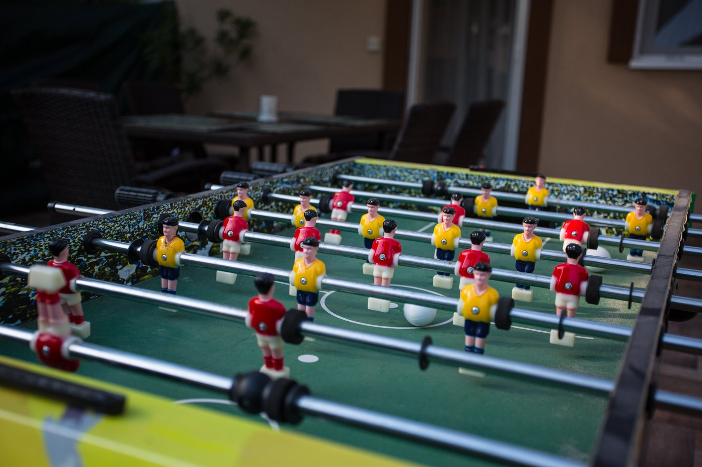

Levendula Apartman
Kapcsolattartó:
Faházi-Takács Beatrix
Telefon:
+3630/482-4651
E-mail:
levendula.balatonmaria@gmail.com
Cím:
Magyarország, 8647 Balatonmáriafürdő, Vilma u. 62
A Levendula iker nyaralók...
Mindkét nyaraló rendelkezik fedett első és hátsó terasszokkal. A parkolás a zárt udvarban, valamint a ház előtt is lehetséges. A nyaraló állapotának, valamint vendégeink és szűkebb kernyezetünk nyugalmának megőrzése érdekében a Levendula Apartmanok nem alkalmasak nagyobb rendezvények illetve leány-, vagy legénybúcsúk megredezésére. A nyaralók egyenként max. 5 férőhellyel rendelkeznek. Igény szerint, időben történő foglalással nagyobb család illetve két társaság részére a két nyaraló egyben is kivehető (külön-külön térítési díj ellenében). A hátsó teraszok ebben az esetben összenyithatók és közösen is használhatók. Így a nagyobb társaság akár együtt is eltöltheti a kellemes időt. (Együtt, de mégis külön.)
- Két különálló szoba
- Nappali-étkező
- Jól felszerelt konyha
- Zuhanykabinos fürdőszoba
- Wi-Fi
- TV
- Mikró
- Ágynemű
- Légkondícionáló
- Konyhai eszközök
- Törülközők
- Elektromos főzőlap
- Ping-Pong asztal
- Napozó ágyak
- Gyerek hinta
- Bogrács
- Csocsó asztal
- Grill sütő
A levendula apartman jelenlegi helyén lévő ház teljesen máshogy festett, mint napjainkban. Kicsit
leharcolt kicsit talán a 70-es évek nyaralóját idéző látvány fogadott bennünket. Kintről megközelíthető
mosdóval és linoleum padlóval. Az egésznek volt egy kis szocreál romantikája. Egyből megláttuk benne a
lehetőséget. Nem is haboztunk sokáig, megvettük és neki is láttunk a felújításnak. Nem volt egyszerű
dolgunk, de férjemmel karöltve kiforgattuk a sarkából a kis épületet és amit most láttok már csak
nyomokban emlékeztet a régi vikkend házra.
Az utca jó adottságokkal rendelkezik révén közel van a központhoz és a balatonmáriai strandhoz is. Az
utcában található éttermekbe, fagyizókba és az utcával szemben lévő Coop áruházba mi is szívesen járunk.
Balatonmáriafürdő egyike azon üdülőfalvaknak, ahol üzemel szabadstrand is, valamint a strandon
mellékhelyiség is található.
Visszakanyarodva a házra, mikor a kertkapun belépünk az utca felőli teraszra érkezünk. A parkolás
megengedett a kerítésen belül, mivel a ház mellett térkő fut egészen a hátsó teraszig. Az első teraszon
kényelmesen elfogyaszthatjuk a reggeli kávénkat vagy az esti pohár borunkat. A hátsó terasz mellett
helyezkedik el a grillsütő. Alkalmas családi vacsorákra, csocsózásra, őrült társasjáték partyk
lebonyolítására, vagy egyszerűen csak egy délutáni szundira, mivel itt található a függőágy is.
A hátsó kertben kapott helyet a szabadtéri (mobil) ping-pong asztal, valamint a napozó ágyak is. A kert
végében található a kerti retro tusoló, ami a nap melegétől felmelegszik (kőkorszaki nap collector) és az
újtatöltéssel sem kell foglalkoznunk, mivel automatikusan töltődik.
Este pedig a környéken élő békák rákezdenek énekükre, amit a teraszról élvezhetünk. Az egésznek kölcsönöz
egy kis vidéki balatoni érzést. Ha a kinti világítást felkapcsoljuk, akkor még egy kis esti beszélgetés is
belefér.
A házból már nem hallani a békák társalgását. A TV-ben talán még elkaphatjuk a Barátok Közt 7452.
epizódját, de ha nem is nézünk tévét, akkor nyugalomba helyezhetjük magunkat a kanapén, vagy elkezdhetjük
a gyerekek éjszakai üzemmódba kapcsolását.
Reggel pedig nekiláthatunk elkészíteni a tojásrántottát az elektromos főzőlapon és futhatunk is le a
Balatonra csobbanni.


Est labore ad
Consequuntur sunt aut quasi enim aliquam quae harum pariatur laboris nisi ut aliquip
Harum esse qui
Excepteur sint occaecat cupidatat non proident, sunt in culpa qui officia deserunt
Aut occaecati
Aut suscipit aut cum nemo deleniti aut omnis. Doloribus ut maiores omnis facere
Beatae veritatis
Expedita veritatis consequuntur nihil tempore laudantium vitae denat pacta
Fontos
Ha szükség lenne rá...
TAXI
Nyakas Péter személyszállító kisiparos CB TAXI Tel.: 85/575-175 85/575-176 Mobil:30/997-8362 Külföldről: 0036/30/9978362 Személyes elérhetőség:Balatonmária vasútállomás Éjszaka: Balatonmária centrum, Black Magic, Delta Club, Rezeda Szállítható személyek száma: 7 fő
Helyi időjárás
Na milyen lesz az időjárás? Ide kattintva friss infókat, előrejelzést kapsz Balatonmáriafürdő és
környéke időjárásáról...
[
Balatonmáriafürdő
időjárása ]
Hajó kikötő
BAHART Hajóállomás
Balatonmáriafürdő, Bernáth Aurél sétány 2.
A balatonmáriafürdői hajóállomásról kerékpáros barát hajójáratok indulnak Balatongyörök,
Balatonmáriafürdő, Szigliget és Badacsony kikötői között.
[ info ]
Ha tényleg hajózni támad kedvük... magunkban...
Kikötőnkben lehetőséget biztosítunk hajóbérlésre is. Gondoltunk azokra is, akik nem rendelkeznek hajós jogosítvánnyal, de mégis szeretnék élvezni a balatoni hajózás örömeit, így bérelhető vitorlás hajó, illetve motorcsónak. A Vonyarc Marina hivatalos magyarországi forgalmazója a torqeedo motoroknak.
Hívom a kikötőt !


{kind=link}
{kind=link}
{kind=link}

Vonyarc Marina
Elektromos hajók
A Vonyarc Marina több mint egy kikötő. A Balaton nyugati medencéjének egyik legújabb kikötője 85
állandó és 10 vendéghellyel
várja a pihenni vágyókat. Vonyarcvashegy strandja, vízi-sport központja és a környék kulturális és
turisztikai látványosságai
olyan vitorlás, horgász bázist képviselnek, mely a nyugalom szigetét jelenti minden tulajdonos és
túrázó számára. Reméljük Önt is hamarosan tagjaink között üdvözölhetjük!
[ Hajóbérlés ITT! ]

Gokart
Balaton.hu
Egyéni és csoportos bérgokartozás 5-10 perces futamidővel, igény szerinti bérlés feltételeit
biztosítva akár pár órás használatra is, a siófoki és a balatonlellei pályákon.
A gyerek gokartok 135cm testmagasságtól, felnőtt gokartok 155cm testmagasságtól és maximum 120kg
súlyhatárig!, vehetők igénybe, amelyek sportos kivitelű Sodikart 270cm3, 9,5le-s Honda motorokkal
szerelt gokartok.
A pálya 400 m hosszú és 6 m széles, biztonságos.
[ Gokart pálya ITT! ]

Zobori élménypark
Zalaszabar
Hullámvasút, szabadesés torony, kötélpálya, csúszdák, beltéri játszóházak, és VR park várja a
gyerekeket, így rossz idő esetére is szuper családi program a hétvégeken.
A park kihagyhatatlan egy balatoni hétvége alatt, ahol a megszokott élményeken túl még eggyel feljebb
tekerheted a MAX gombot a saját lelked élménymutatóján.
[ Élmények ITT!
]

West of Balaton
A nagy kedvezmények...
A West of Balaton a Nyugat-balatoni térség legjobb programjait gyűjti egy csokorba, és 20% kedvezményt biztosít programban szereplő partnereknél. Akár egy fagyizás árát is megspórolhatod, ha zsebrevágod a West of Balaton helyszíneken kapott belépőjegyedet! Nem kell mást tenni, mint a következő látogatóhelyen felmutatni, és már jóvá is írják a 20% kedvezményt! [ Kedvezmények ITT! ]
Ha ennénk valamit...
Itt vannak az éttermek

Florida fagyizó
BALATONMÁRIAFÜRDŐ, RÁKÓCZI ÚT 85.
István Grill & Fagylaltkert
BALATONMÁRUAFÜRDŐ, HULLÁM ÚT 218.Hableány Étterem Pizzéria
BALATONMÁRUAFÜRDŐ, RÁKÓCZI U 48.Pincekert Vendéglő
BALATONKERESZTÚR, ISKOLA U 4.Párizsi udvar
KESZTHELY, KASTÉLY U.Jóbarát vendéglő
KESZTHELY, MARTINOVICS U. 1.Varga Vendéglő
BALATONGYÖRÖK, FÜREDI ÚT 34/ANádas Csárda
GYENESDIÁS, KOSSUTH LAJOS U. 79.Torony étterem
FONYÓD, VITORLÁS U. 25.Makkos vendéglő
FONYÓD, HUNYADI JÁNOS U. 9.Fehér ló Pizza & grill
BALATONBOGLÁR, PLATÁN SORLelle Grillkert
BALATONLELLE, KÖZTÁRSASÁG U. 3.Levendula Apartman
A szállás és környéke
Cím:
Balatonmáriafürdő, Vilma u. 62, 8647
Név / Telefon:
Faházi-Takács Beatrix / +36 30 4824651